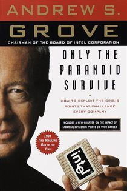

Why Did Micromax Fail?
India's #1 Phone Brand Missed One Announcement
📜 What Happened
By 2014 Micromax was India's largest phone brand — even passing Samsung — by nailing one playbook: cheap feature-rich 3G phones through offline dealers. Then September 2016 happened: Reliance Jio launched free 4G data for everyone. Overnight, 4G went from luxury to mandatory — and Micromax's entire pipeline and inventory was 3G. Chinese brands (Xiaomi, Oppo, Vivo) flooded in with 4G phones, online-first sales, and faster refresh cycles. Micromax, caught mid-stride with dealer shelves full of obsolete stock, fell from #1 to under 1% market share within three years.
☠️ The Fatal Mistake
Treating the 4G transition as a future quarter's problem while a competitor made it TODAY'S problem for the entire country at once.
🧠 The Lesson (Free for You)
Platform shifts don't ask about your inventory. When infrastructure changes (3G→4G, offline→online, cash→UPI), the calendar belongs to whoever moves first — react in quarters and you'll be history in years.
📕 The Antidote Book

Andy Grove ran Intel through the near-death experience that defines the book: Japanese manufacturers destroyed Intel's founding business — memory chips — and Grove had to abandon the company's identity to survive. His…
📖 OPEN THE FULL INTERACTIVE BREAKDOWN →Searchable, filterable, free forever — they paid billions; your lesson is free.